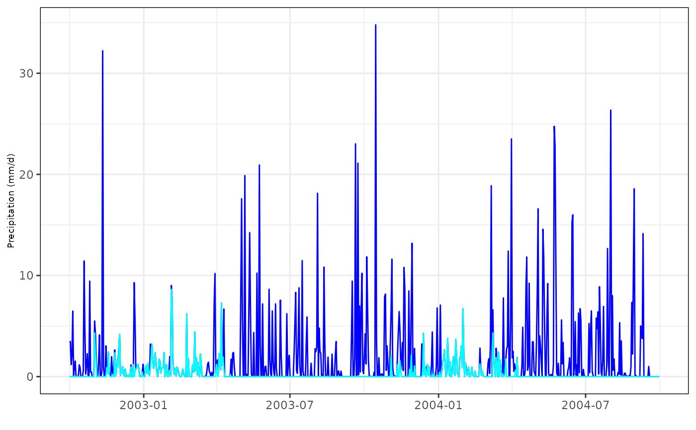
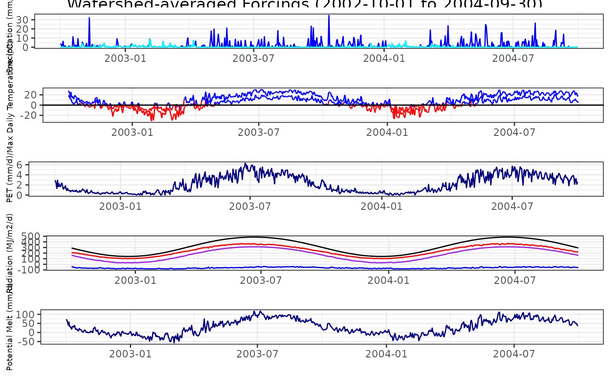
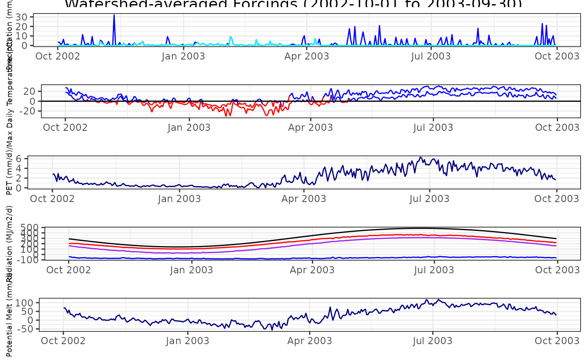
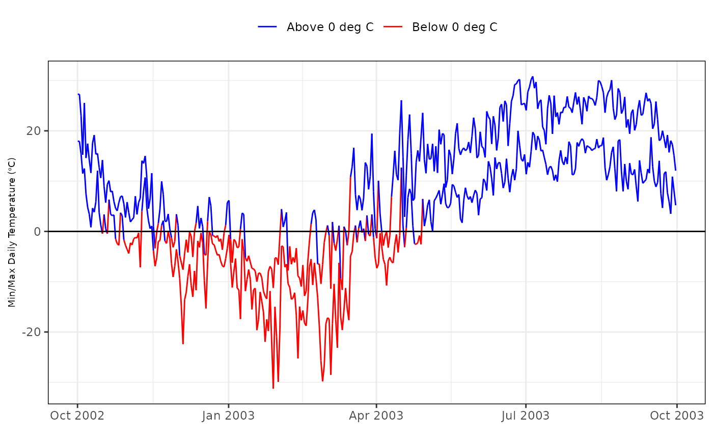

rvn_forcings_plot generates a set of 5 plots (precip,temperature,PET,radiation, and potential melt), which summarize the watershed-averaged forcings. Returns a list with the individual plots.
rvn_forcings_plot(forcings, prd = NULL)forcings attribute from forcings.read function
(optional) time period over which the plots are generated
forcing_plots list of ggplot objects of individual forcing plots and the combined plot
Creates multiple plots from a ForcingFunctions.csv file structure generating using RavenR's forcings.read function
rvn_forcings_read for the function used to read in the
forcings function data
# read in sample forcings data
data("rvn_forcing_data")
fdata <- rvn_forcing_data$forcings
# plot forcings data
p1 <- rvn_forcings_plot(fdata)
p1$Precipitation

p1$AllForcings

# plot subset of forcing data for 2002-2003 water year
prd <- "2002-10-01/2003-09-30"
rvn_forcings_plot(fdata,prd)$AllForcings

# add Legend back to plot (using ggplot2::theme)
library(ggplot2)
rvn_forcings_plot(fdata,prd)$Temperature+
theme(legend.position='top')
